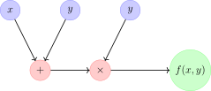

计算图基础#
什么是计算图？#
计算图（Computational Graph）是一种用图来表示数学表达式的方法。图中的节点代表变量或运算，边代表数据流动的方向。这种表示既直观，又为自动微分（automatic differentiation）打下了数学基础。
计算图的正式定义
计算图 \(G = (V, E)\) 是一个有向图，其中：
\(V\) 是节点集合，包括：
输入节点：表示变量或常数（如 \(x\), \(y\)）
操作节点：表示数学运算（加法、乘法、函数等）
输出节点：表示最终计算结果
\(E\) 是边集合，表示数据依赖关系
每个节点 \(v \in V\) 都有一个对应的值 \(val(v)\)
边 \((u, v) \in E\) 表示节点 \(u\) 的值是节点 \(v\) 的输入
计算图的基本元素#

计算图示例：\(f(x,y) = (x+y) \times y\)
节点类型#
输入节点（Input Nodes）
表示模型的输入变量或常数
通常是计算图的起点
在训练过程中，这些节点的值会被赋予具体数值
示例：\(x\), \(y\), \(w\), \(b\) 等
操作节点（Operation Nodes）
表示数学运算或函数
接收一个或多个输入，产生一个输出
示例：加法(+)、乘法(\(\times\))、sigmoid(\(\sigma\))、ReLU等
每个操作节点都对应一个前向计算和反向传播规则
边的语义#
边在计算图中承载着重要的语义信息：
数据流：数值从源节点流向目标节点
依赖关系：显示计算过程中的依赖关系
梯度传播：反向传播时，梯度沿着边反向流动
计算顺序：边的方向决定了计算的先后顺序
计算图的构建规则#
构建计算图需要遵循特定的规则，以确保计算的正确性和效率：
构建原则
无环性：计算图必须是有向无环图（DAG），避免循环依赖
完整性：每个操作节点的所有输入都必须有明确的来源
一致性：数据类型和维度必须匹配
可微分性：所有操作节点必须支持前向计算和反向传播
复杂模型的表示#
现代深度学习模型可以表示为极其复杂的计算图。以逻辑回归为例：

逻辑回归的计算图表示#
计算图的前向传播#
前向传播是计算图中数值从输入节点流向输出节点的过程。对于每个节点，我们按照拓扑顺序计算其值。
前向传播算法#
def forward_pass(graph):
"""执行计算图的前向传播"""
# 拓扑排序
topological_order = topological_sort(graph)
for node in topological_order:
if node.is_input:
# 输入节点：值已给定
continue
elif node.is_operation:
# 操作节点：计算输出值
inputs = [predecessor.value for predecessor in node.predecessors]
node.value = node.operation(*inputs)
return graph.output_node.value
前向传播示例#
考虑函数 \(f(x, y, z) = (x + y) \times z\)：
输入节点：\(x = 2\), \(y = 3\), \(z = 4\)
操作节点1：\(a = x + y = 2 + 3 = 5\)
操作节点2：\(f = a \times z = 5 \times 4 = 20\)
计算图的优势#
1. 可视化复杂表达式#
计算图把复杂的数学表达式拆成简单的操作，让结构一目了然。
2. 支持自动微分#
计算图为反向传播算法提供了数据结构，让梯度计算自动化。
3. 优化计算顺序#
通过拓扑排序，计算图可以确定最优的计算顺序，避免重复计算。
4. 并行计算#
计算图能分析操作之间的依赖关系，找出可以并行执行的操作。
实际应用：PyTorch中的计算图#
在PyTorch中，计算图是动态构建的：
import torch
# 创建张量并启用梯度跟踪
x = torch.tensor(2.0, requires_grad=True)
y = torch.tensor(3.0, requires_grad=True)
z = torch.tensor(4.0, requires_grad=True)
# 构建计算图
a = x + y # 加法操作
f = a * z # 乘法操作
print(f"x = {x}, y = {y}, z = {z}")
print(f"a = x + y = {a}")
print(f"f = a * z = {f}")
# 计算梯度
f.backward()
print(f"\n梯度计算:")
print(f"∂f/∂x = {x.grad}")
print(f"∂f/∂y = {y.grad}")
print(f"∂f/∂z = {z.grad}")
计算图的内存管理#
PyTorch使用动态计算图，每次前向传播都会构建新的计算图。这提供了灵活性，但也需要注意内存管理：
# 释放计算图内存
f.backward(retain_graph=True) # 保留计算图
f.backward() # 默认会释放计算图
# 或者手动释放
del f, a
torch.cuda.empty_cache() # 如果使用GPU
常见计算图操作#
基本数学运算#
# 基本运算
a = x + y # 加法
b = x - y # 减法
c = x * y # 乘法
d = x / y # 除法
e = x ** 2 # 幂运算
# 矩阵运算
import torch
A = torch.randn(3, 4, requires_grad=True)
B = torch.randn(4, 5, requires_grad=True)
C = torch.matmul(A, B) # 矩阵乘法
激活函数#
import torch.nn.functional as F
x = torch.randn(10, requires_grad=True)
# 常见激活函数
y_relu = F.relu(x) # ReLU: max(0, x)
y_sigmoid = torch.sigmoid(x) # Sigmoid: 1/(1+exp(-x))
y_tanh = torch.tanh(x) # Tanh: (exp(x)-exp(-x))/(exp(x)+exp(-x))
y_softmax = F.softmax(x, dim=0) # Softmax: exp(x_i)/∑exp(x_j)
计算图的调试#
可视化计算图#
import torchviz
from torchviz import make_dot
# 创建计算图
x = torch.tensor(2.0, requires_grad=True)
y = torch.tensor(3.0, requires_grad=True)
z = x * y + torch.sin(x)
# 生成可视化
dot = make_dot(z, params={'x': x, 'y': y})
dot.render("computational_graph", format="png") # 保存为PNG
检查梯度流#
def check_gradient_flow(model):
"""检查模型中梯度的流动情况"""
for name, param in model.named_parameters():
if param.grad is not None:
grad_mean = param.grad.abs().mean().item()
print(f"{name}: gradient mean = {grad_mean:.6f}")
else:
print(f"{name}: no gradient")
总结#
计算图是深度学习的核心数据结构，它将复杂的数学表达式分解为简单的操作节点，通过有向边连接形成计算流程。计算图不仅提供了直观的可视化表示，还为自动微分和优化计算提供了基础。理解计算图的结构和运作原理是掌握深度学习框架的关键。
贡献者与修订历史
查看详细修订记录
-
0c291d72025-12-10 - Heyan Zhu: docs: restructure course materials and add new content